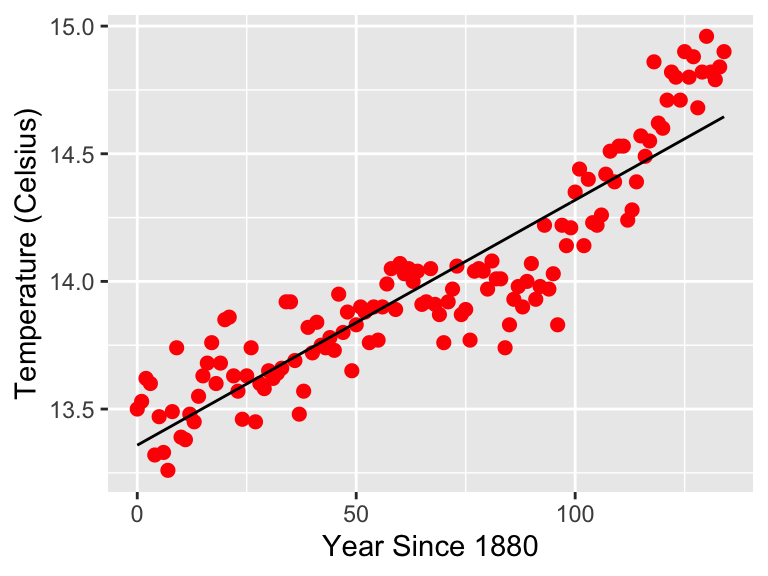

2.2 The Information on Information Criterion
An alternative approach looks at the number of parameters in the model \(f\) and \(g\) and evaluates the tradeoff between model complexity (i.e. the number of parameters used) and the overall likelihood.
Information criteria are used to assess the tradeoffs between model complexity and the number of parameters. The goal of information criteria is to determine the best approximating model.
There are several types of information criteria, and this is a field of active study:
- The Akaike Information Criteria (AIC) is the most commonly used:
\[\begin{equation} AIC = -2 LL_{max} + 2 P \tag{2.1} \end{equation}\]
- An alternative to the AIC is the Bayesian Information Criterion (BIC)
\[\begin{equation} BIC = -2 LL_{max} + P \ln (N), \tag{2.2} \end{equation}\] In Equations (2.1) and (2.2) \(N\) is the number of data points, \(P\) is the number of estimated parameters, and \(LL_{max}\) is the log-likelihood for the parameter set that maximized the likelihood function.
In both cases, a lower value of the information criteria indicates greater support for the model from the data. For both Equations (2.1) and (2.2) show the dependence on the log likelihood function and the number of parameters.
Let’s evaluate how the AIC and BIC compare for our example. When we have a statistical model fit, computing these are fairly easy to compute: Let’s try to work this with the dataset global_temperature in the MAT369Code library. This dataset represents the average global temperature determined by NASA using local temperature data. We will be working with these data to fit a function to data and parameters.
For you R purists, you could also use the function AIC or BIC. To apply them you need to first do the model fit (with the function lm1:
regression_formula <- globalTemp ~ 1 + yearSince1880
fit <- lm(regression_formula,data=global_temperature)
AIC(fit)## [1] -93.83421BIC(fit)## [1] -85.11838The function informationCriteria that generates a linear regression plot of the data and also returns the values of \(N\), \(P\), and \(LL_{max}\) you need to compute the AIC and the BIC. The inputs to this command are very similar to plotRegression_Data:
regression_formula <- globalTemp ~ 1 + yearSince1880
informationCriteria(global_temperature,regression_formula)##
## Call:
## lm(formula = regression_formula, data = data)
##
## Residuals:
## Min 1Q Median 3Q Max
## -0.45013 -0.11632 -0.00849 0.11326 0.36865
##
## Coefficients:
## Estimate Std. Error t value Pr(>|t|)
## (Intercept) 13.358442 0.028832 463.32 <2e-16 ***
## yearSince1880 0.009601 0.000372 25.81 <2e-16 ***
## ---
## Signif. codes: 0 '***' 0.001 '**' 0.01 '*' 0.05 '.' 0.1 ' ' 1
##
## Residual standard error: 0.1684 on 133 degrees of freedom
## Multiple R-squared: 0.8336, Adjusted R-squared: 0.8323
## F-statistic: 666.2 on 1 and 133 DF, p-value: < 2.2e-16
##
## [1] "Number of parameters (P): 2"
## [1] "Number of data points (N): 135"
## 'log Lik.' 49.9171 (df=3)## Warning: Use of `data[[1]]` is discouraged. Use `.data[[1]]` instead.## Warning: Use of `data[[2]]` is discouraged. Use `.data[[2]]` instead.
What we then do next is make a table comparing the different models and their AIC:
| Model | AIC |
|---|---|
| Linear | -93.8342074 |
| Quadratic | -140.7691173 |
| Cubic | -168.9804647 |
| Quartic | -167.1983081 |
These results show that the quadratic model is the better approximating model.
Also: doing the log likelihood is
logLik(fit), wherefitis the result of your linear model fits.↩︎